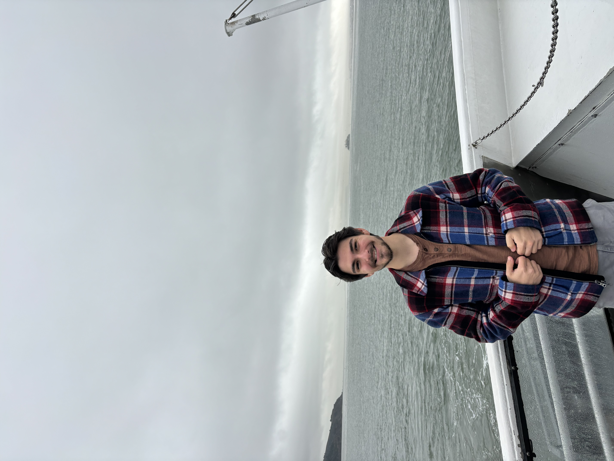
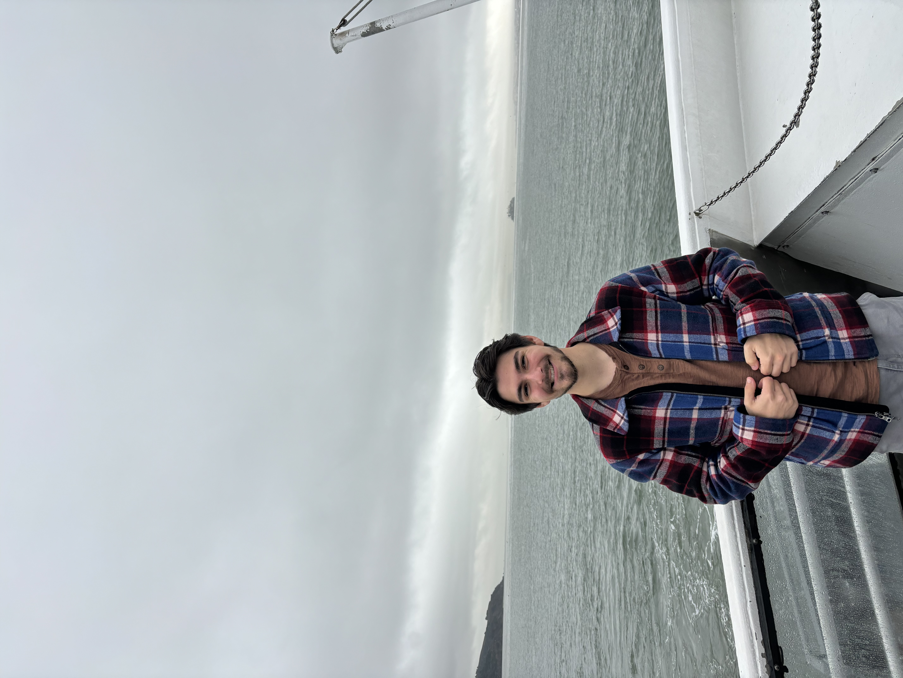
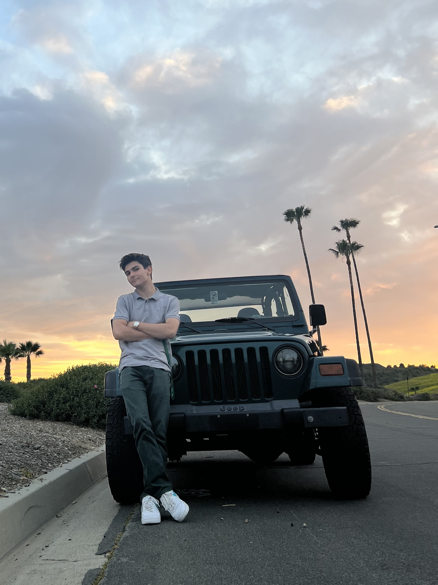
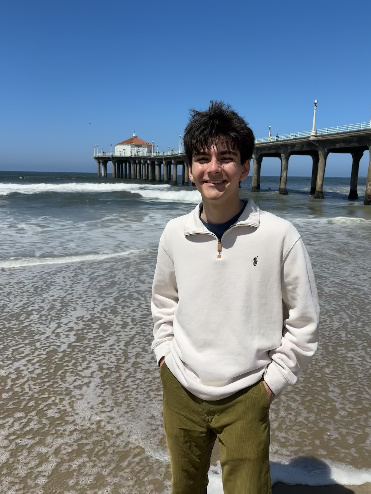
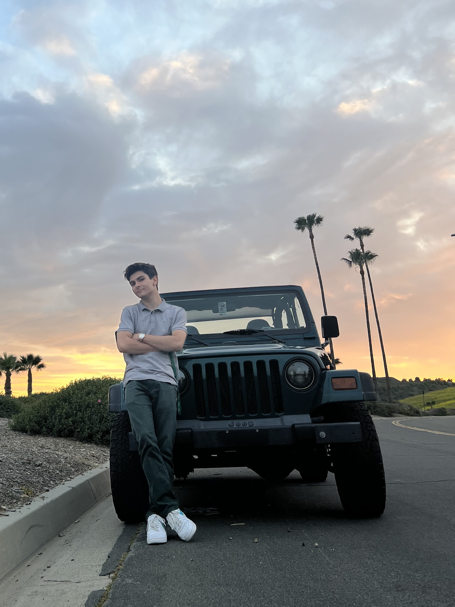
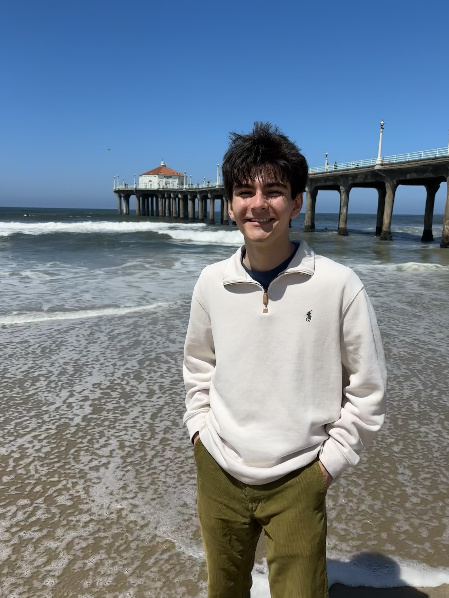

I am currently in my fourth and final year at Cal Poly Pomona for my undergraduate degree in computer science. A few of my favorite hobbies include traveling, off-roading, backpacking, catching a movie and anything that involves live music. I aspire to bring positive change to the world through technological innovation throughout my career.
 

 





Work Experience
Cal Poly Pomona AIoT Lab
ML Research Project Lead
November 2023 - Present
TorqLink LLC
Software Development Intern
April 2024 - August 2024
San Jose Unified School District
Web Development Intern
May 2023 - January 2024
Relevant Coursework
CS4800 - Software Engineering
CS4750 - Mobile App Dev
CS4650 - Big Data Analytics
CS4250 - Internet Scraping
CS4210 - Machine Learning
CS4200 - Artificial Intelligence
Machine Learning
Other
App Development
Java Programs
Autonomous Driving Software
November 2023 - Present | CPP AIoT Research Lab
Working with the Cal Poly Pomona AI research lab as a project lead, I oversaw the development of autonomous driving software, built for lane detection purposes. My team and I constructed a convolutional neural network yielding results with a 93% overall accuracy in test cases. Our model was capable of avoiding obstacles and keeping our remote test car within designated lane markers consistently for 300+ laps, completely free of user input.
Scratch Built Search Engine
Spring 2024 | CS4250 Web Search & Recommender Systems
Hand built Recommendation System built utilizing beautifulSoup library, pymongo database functionality and NLTK tokenization & stemming functions. The final product is a search engine capable of locating, crawling, and parsing the CPP college of Civil Engineering Faculty page, storing found information in a MONGODB database, querying said database and performing TF-IDF / Cosine Similarity Calculations to produce a ranked list for results.
Mini Social Media App
Winter 2023 | CS3560 Object Oriented Programming
This is an implementation of a very rudimentary social media platform supporting "following", "posting", "liking", and auto updating feed. The User Interface has an admin view, as well as a user view. The User View allows for multiple user's to have views open at once, and if any action is taken, all user view's update automatically. This project implements Object Oriented Programming techniques such as Polymorphism, inheritance and abstraction.
Emotion Detection Neural Network
Fall 2023 | CS4210 Machine Learning and its Applications
Utilizing a convolutional neural network, this program is capable of receiving a picture of a human, and predicting with 75% accuracy what emotion is being portrayed in said image. The machine learning model is trained with a set of 20,000 images for 100 epoch's at a learning rate of .01. By the end of training, the test accuracy peaks at a 76%. This model came in third place in a university organized online machine learning competition.
Numerical Method Implementations
Summer 2023 | CS3010 Numerical Methods
Terminal based application designed to provide basic functionality for numerical methods such as Bisection, False Position, Newton-Raphson and Secant. The main program runs off of a driver that provides terminal user input to solve equations using the methods mentioned above. If no solution is found, the program has an upper limit, preventing any infinite loops from causing issues. This program is also capable of storing error values as it traverses to find a solution.